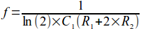

Amazed by the idea of electronic piano?
Here is a chance for you to make one yourself!
Components Required
Team Mentors
What will you learn?
Cool stuff can be created out of simple things, working of 555 timers, opamps, flipflops, what is music in engineering perspective.
You will get skills like soldering, circuit design, solidworks, product design. In addition to all the instruments you get to use in the process.
How will we achieve it?
Now, each of the seven octaves i.e. Sa-re-ga-ma-pa-dha-ni have a particular frequency associated with them, all we need to do is to create an signal of that particular frequency at a push of a particular button. This could be done by Astable mode of 555 timer, using different combinations of resistances, as the frequency of the ouput depends on the input resistances as you can see in the figure below.
Further!!
Once we successfully finish this basic circuit, we will think of how to take this project further, one way would be in the direction of increasing the sound quality using filtering techniques. For that we will need microcontrollers. This portion is open for disscussion. :) keypad of numbers, and we with the help of microcontrollers display it on an LCD display unit.This portion is open for discussion. :)
Login to your Tech ID @ http://techid.stab-iitb.org to register your project
Click here